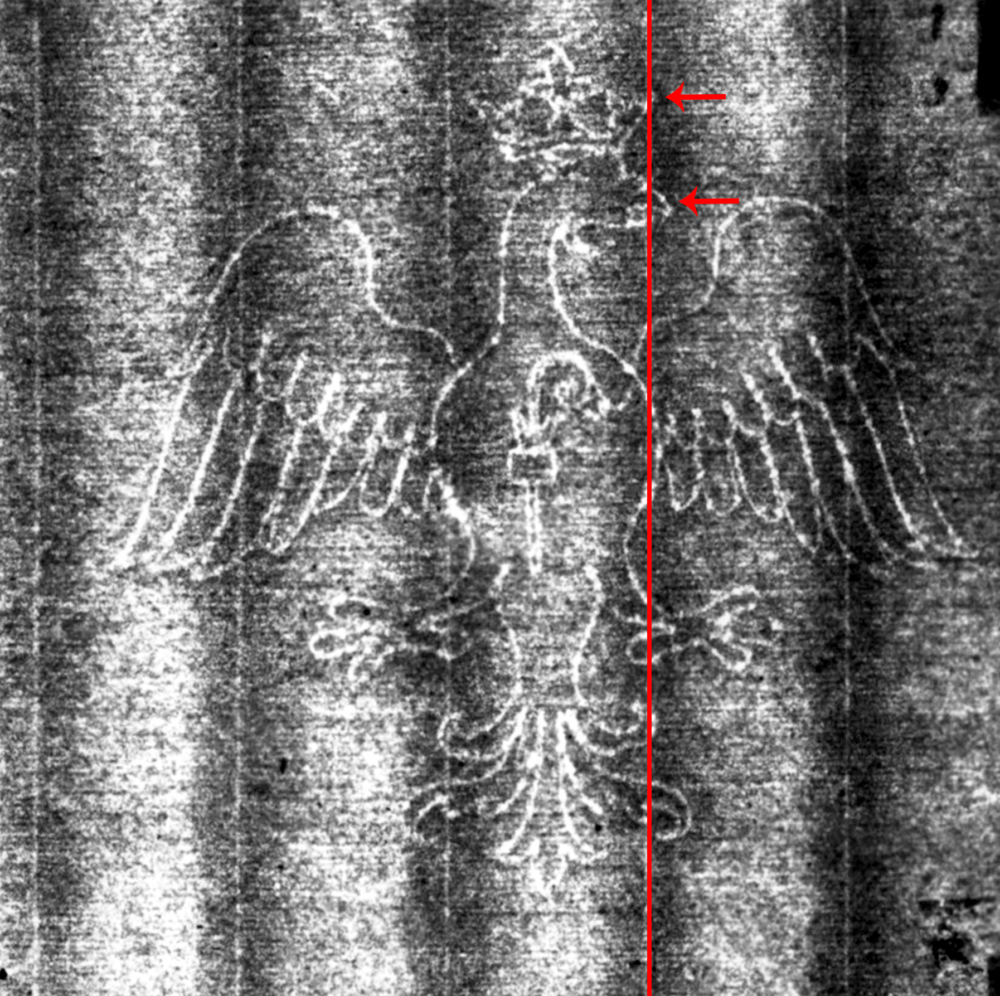
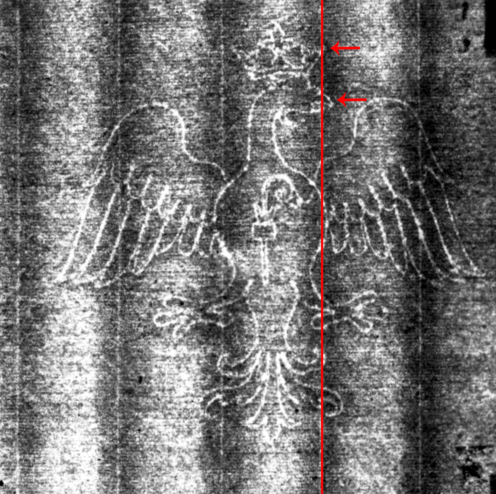

Single-Headed Eagle
↩ Back one step ↻ Restart this branch See branch diagramDoes the same chainline intersect the beak and crown?
Yes NoExample
Does the same chainline intersect the beak and crown? (marked with blue).


Does the same chainline intersect the beak and crown? (marked with blue).
